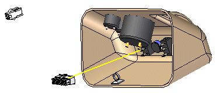
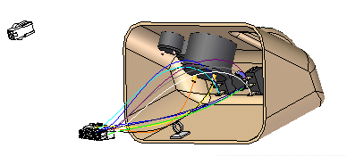
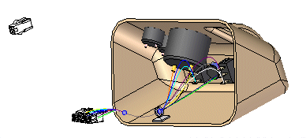
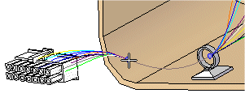
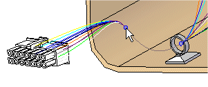
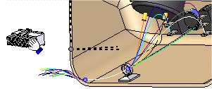
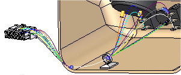

Using step 3 of the Harness Wizard
This dialog box displays information about the connections used to create the electrical routing. You can use options on this dialog box to:
-
Assign terminals on the component parts
-
Delete wires from the harness
-
Assign Attributes to a wire or cable
-
Preview the harness
-
Assign terminals
If your file contains undefined terminals, they highlight in orange. As with components, you do not have to exit the wizard to assign a terminal.
To assign a terminal:
-
Click the terminal in the Connections table.
-
Click the Assign Terminal button.
-
In the graphic window, click the circular edge on the highlighted part you want to assign the terminal to. The terminal is assigned and the cells are no longer highlighted.
-
-
Delete wires from the harness
If a wire listed in the connections document is not needed in the electrical routing, you can delete it.
To delete a wire from the electrical routing:
-
Right-click the wire you want to delete.
-
On the shortcut menu, click Delete Wire From Harness.
-
-
Assign attributes to a wire or cable
You can assign attributes to a wire or cable while working in the wizard.
To assign an attribute to a wire:
-
Click the Solid Edge Attribute column for the wire.
-
Click the menu arrow.
The list includes attributes for the type of wire selected. For example, if the wire is 16 gage, the list will display only attributes for a 16 gage wire. There is also a Remove Filter entry in the list which allows you to remove the filter and display attributes for other types of wire.
-
Select an attribute from the list.
To assign an attribute to a cable:
-
Click the Cable Attribute column for the cable.
-
Click the menu arrow.
The list includes attributes for the type of cable selected. There is also a Remove Filter entry in the list which allows you to remove the filter and display attributes for other types of cable.
-
Select an attribute from the list.
-
-
Preview the harness
You can use the Preview button on the wizard to preview the harness. You can preview a single connection or use the Shift and Ctrl keys to preview multiple connections.
To preview the harness:
-
Select the connection you want to preview.
-
Click the Preview button.
A straight line preview of the connection is displayed in the assembly.

After ensuring the information on the wizard is correct, click Finish to create the harness.

Once the electrical routing is complete, you can use the Cable or Bundle command to group the wires or cables in the design.

After creating a electrical routing, you may need to reposition conductors and components to clean up the design. When you create a cable or bundle, a bluedot is created at the point where the wires, cables, and bundles meet.

You can drag the bluedot to change the path the bundle or cable follows.

You can also clean up the harness design by using the Move command to drag a component to a new location.

Once you move the component to a new location, the link to the conductors is automatically updated.

-
How do I
Use Harness Wizard to create a harness designAssign component and terminal names
Edit the definition of a wire harness conductor
Create a Harness report
Learn more
Creating a wire harness automaticallyUsing step 1 of the Harness Wizard
Using step 2 of the Harness Wizard
Mapping electrical component ids in PathFinder
Look up more details
Harness Wizard commandHarness Populate Options dialog box
Harness Wizard - Step 1 of 3
Harness Wizard - Step 2 of 3
Harness Wizard - Step 3 of 3
Linking 3D Electrical parts in Wiring Harness
Connection Options dialog box
Assign Terminals command
Assign Terminals dialog box
Properties command (Electrical Routing)
Properties dialog box (Electrical Routing)
Custom Attributes dialog box
Edit Definition command (Electrical Routing)
Edit Definition command bar
Harness Reports command
Harness Reports dialog box